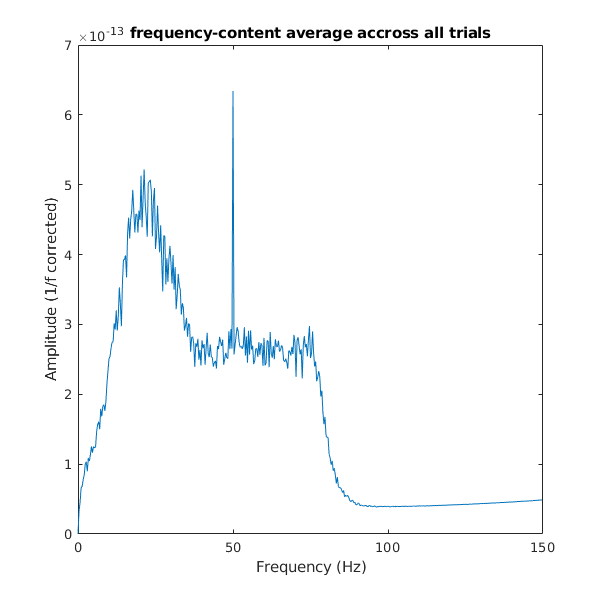

8.3
Contents
8.3 - 1
load('tfr-data.mat');
8.3 - 2 - CODE
freq = 1/(time(2)-time(1));
8.3 - 2 - ANSWER
the sampling frequency is 300hz
8.3 - 3
dfft = fft(data,[], 2);
8.3 - 4
n=length(dfft); T = n/freq; df= 1/T; f = 0:df:(freq-df); % frequency range n=length(dfft); n_cutoff = floor(n/2); range = f(1:n_cutoff); % cut off the data at nyquist frequency
8.3 - 4 ANSWER
The associated frequency range is 300hz, nyquist frequency is then 150hz
8.3 - 5
amplitude = abs(dfft)/n; amplitude = 2 * amplitude(:,1:n_cutoff); amplitude(:,1) = amplitude(:,1)/2;
8.3 - 6
amp_mean = mean(amplitude); plot(range, amp_mean); xlabel('Frequency (Hz)'); ylabel('Amplitude'); title('frequency-content average accross all trials'); set(gcf, 'Position', [10,10,600,600]);

8.3 - 7
new_amp_mean = amp_mean.*range; plot(range, new_amp_mean); xlabel('Frequency (Hz)'); ylabel('Amplitude (1/f corrected)'); title('frequency-content average accross all trials'); set(gcf, 'Position', [10,10,600,600]);
8.3 - 7 - ANSWER
the noise at the beginning of the spectrum seems to be gone, the rest of the graph is rescaled so now the highest peak is at 50hz
8.3 - 8
the 50hz frequency occurs most frequently because of the power outlet
8.3 - 9
activity seems to occur in the bandwidth 0 to 80 but that seems to be comprised of 3 main bandwidths - 0 to 80 with moderate amplitude, 0-40 with a huge peak in the middle, and the spike at 50hz